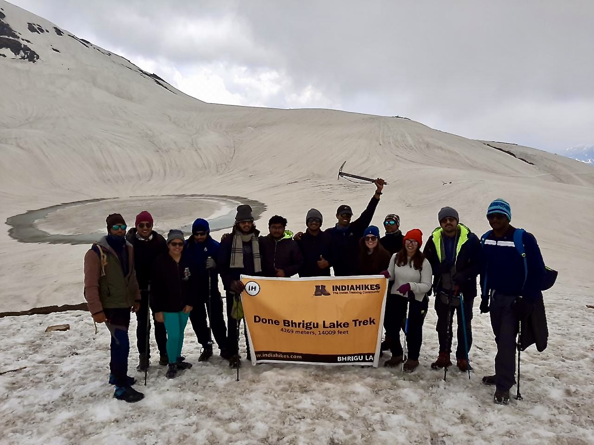

About Me
Driven by the challenges at the intersection of NLP, Large Language Models, and Responsible AI, I earned my Master's in Data Science from Texas A&M . During my studies, I contributed to impactful research at the FLAIR Lab, where my research focused on practical advancements in LLMs. Notably, I developed techniques for efficient RLHF, created a novel approach to multi-preference alignment (submitted to COLM 2025), and engineered an algorithm for unlearning sensitive content that secured 2nd place at SemEval-2025. My technical toolkit includes deep experience with Transformers, PyTorch, RL frameworks (PPO, DPO), and distributed training across multi-GPU/multi-node HPC clusters using Deepspeed and Slurm. This research experience is built on a solid foundation of software engineering, including developing scalable AutoML platforms and microservices using Python, Docker, and Kafka. I am eager to apply my skills in research and development to challenging Software Engineering or Data Science positions..
Beyond Work
Beyond technology, I find inspiration in nature through mountaineering expeditions. The challenges of teamwork and perseverance in the mountains mirror the collaborative problem-solving I bring to my technical work.

Bhirgu Lake - The lake that never freezes @14,000 feet, Himalayas
Technical Skills
Languages: Python, Go, C/C++, SQL, Shell/Bash
ML/AI Frameworks: PyTorch, Transformers (HuggingFace), TensorFlow, Scikit-Learn, OpenAI, vLLM
MLOps & Infrastructure: Docker, Kubernetes, Apache Kafka, AWS (EC2, S3, SageMaker), SLURM, Jenkins CI/CD, Git
Data & Storage: PostgreSQL, MongoDB, Elasticsearch, Apache Spark, Pandas, NumPy
Web Frameworks & APIs: FastAPI, Flask, gRPC, REST APIs
Specializations: Large Language Models, Multimodal AI, Model Optimization, Distributed Training, ML Pipeline Engineering, Distributed Systems, Microservices, ETL, Geospatial Data Processing, System Design
Education
Texas A&M University, College Station, TX Aug 2023 - May 2025
Master of Science in Data Science GPA: 3.7/4.0
- Research Assistant, FLAIR Lab - Responsible NLP, Safety, Robustness
- Teaching Assistant, Dept. of Statistics (Mentored 50+ students)
Manipal Institute of Technology, Manipal, India July 2017 - Aug 2021
Bachelor of Technology in Control Systems Engineering
Professional Experience
Software Developer, ML Team - Viewzen Labs Pvt. Ltd., Bangalore, India July 2021 - July 2023
- Spearheaded development of distributed AutoML platform (MLaaS).
- Developed system architecture orchestrating microservices through REST APIs and Kafka Streams, collaborating with 8-person cross-functional team.
- Built Python library implementing AutoML logic using Hyperopt and Scikit-Learn, reducing ML development time by 80%.
- Created RESTful Python microservices with Docker containerization. Mentored 2 junior developers on API design.
- Enhanced processing speeds by 20% through Cython optimization and multiprocessing for high-volume data transformation.
- Led predictive modeling initiative for 45,000+ women (300+ features), culminating in medical desktop application.
- Utilized multiprocessing to handle large volume of requests and implemented asynchronous Kafka consumers.
Machine Learning Engineer Intern - Centre for Digital Financial Inclusion, New Delhi, India Feb 2021 - June 2021
- Transformed raw audio signal to its MFCC components using custom TensorFlow layers.
- Implemented RNN, GRU and LSTM architectures for text prediction at character, word and phoneme level.
- Utilized DeepSpeech transfer learning on Indian Accent dataset achieving 0.10 CER and 0.17 WER with KenLM language model.
- Added T5 Transformer to generate SQL queries from natural language, showcasing broader NLP application skills.